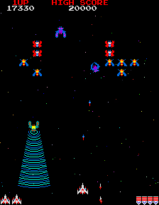

Galaga
Galaga[a] is a 1981 fixed shooter arcade video game developed
and published by Namco. In North America, it was released by
Midway Manufacturing. It is the sequel to Galaxian (1979),
Namco's first major video game hit in arcades. Controlling a
starship, the player is tasked with destroying the Galaga
forces in each stage while avoiding enemies and projectiles.
Some enemies can capture a player's ship via a tractor beam,
which can be rescued to transform the player into a "dual
fighter" with additional firepower.
Gameplay
Galaga is a fixed shooter. The player mans a lone starfighter
at the bottom of the screen, which must prevent the Galaga
forces from destroying all of mankind.[5] The objective of each
stage is to defeat all of the Galaga aliens, which will fly
into formation from the top and sides of the screen.[6] Similar
to Galaxian, aliens will dive towards the player while shooting
down projectiles; colliding with either projectiles or aliens
will result in a life being lost.[6]

Development
Galaga was created by Japanese developer Shigeru Yokoyama, a
long-time veteran of Namco.[7] Namco's first big video game hit
in arcades was Galaxian (1979);[8][9] the game's success led
Namco to produce a large number of Namco Galaxian arcade boards
to keep up with demand.[7] By the early 1980s the game was
becoming harder to sell, so to help clear out inventory,
Yokoyama was tasked with creating two new games that could run
on the Namco Galaxian board.
Conversions
Sega-Galaga, the first home conversion of Galaga, was published
by Sega for the SG-1000 in 1983.[14] An MSX version followed a
year later in 1984.[15] A conversion for the Family Computer
was released in 1985 for Japan,[16] which was later released
internationally by Bandai for the Nintendo Entertainment
System, subtitled Demons of Death in North America.
Reception
Galaga was met with acclaim, with many applauding the addictive
nature, gameplay structure, innovation and improvements over
its predecessor, and was a popular game during the golden age
of arcade video games.